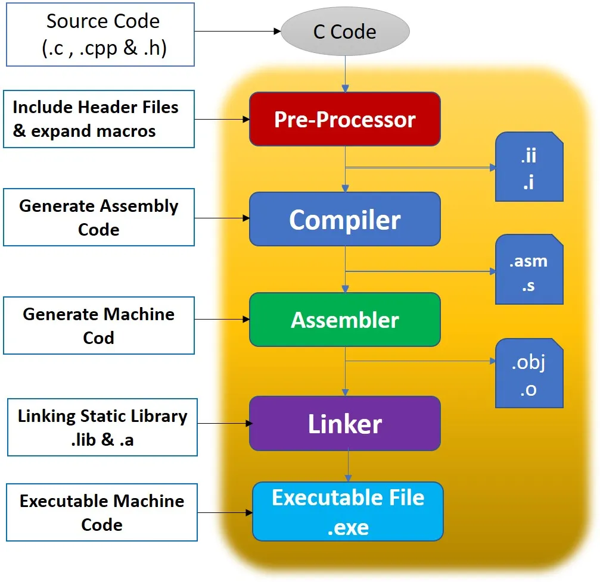
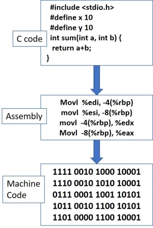
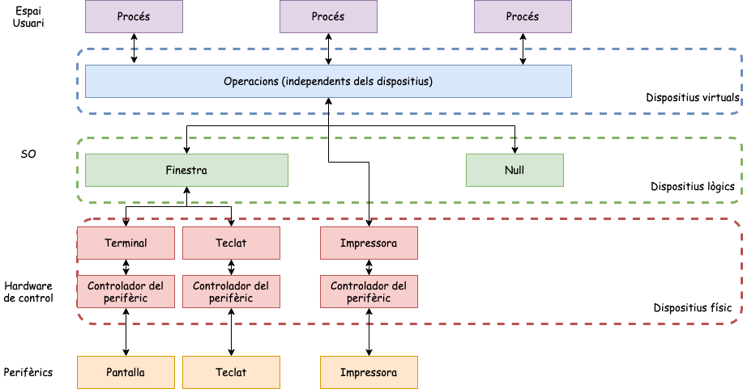
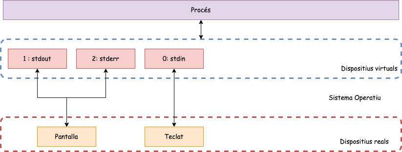
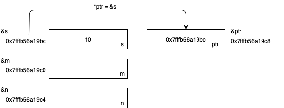
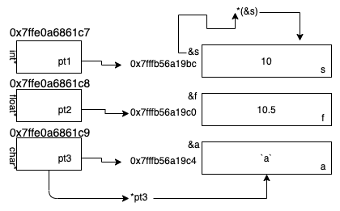

Introducció a la programació de Sistema (I) (C)
Unitat 1 · Sistemes Operatius (SO)
Introducció
Desenvolupament en sistemes Linux/UNIX
El desenvolupament de programari de sistema el realitzarem amb els llenguatge C i basa en els compiladors GNU gcc.
Fitxer: scripts/check.sh
Navegant a les entranyes del compilador GCC


Etapes de la compilació i l’enllaç (I)
Preprocessador
- El preprocessador processa el codi font, buscant instruccions que comencen amb un hash (#), com #include, #define, i #ifdef.
- Inclou fitxers d’encapçalament (headers) i substitueix macros i definicions. També elimina els comentaris.
- Genera un fitxer de codi font amb les instruccions del preprocessador processades, preparat per a la compilació.
Etapes de la compilació i l’enllaç (II)
Compilador
- Traduïx el codi font al assemblador equivalent. En alguns compiladors, el codi es pot convertir directament en codi màquina en aquesta etapa.
- Traduir el codi de nivell alt a codi de nivell baix i optimitzar-lo per al maquinari subjacent.
- Genera un fitxer de codi assemblador amb l’extensió .s. Per exemple, si el fitxer de codi font és hola.c, el fitxer generat seria hola.s.
Etapes de la compilació i l’enllaç (III)
Assemblador
- Converteix el codi assemblador en codi objecte o codi de màquina.
- Produir codi binari que pugui ser entès per la CPU.
- Genera un fitxer de codi objecte amb l’extensió .o. Per exemple, el fitxer resultant seria
hola.o.
Etapes de la compilació i l’enllaç (IV)
Enllaçador (Linker)
- Enllaça el codi objecte amb les biblioteques necessàries per crear l’executable final.
- Organitzar i combinar el codi objecte i les biblioteques, resolent les referències externes.
- Genera l’executable final, que és el fitxer que podeu executar. Per exemple, hola.
Exemple: Etapes
Fitxer: sources/ex1.c
- Executable:
gcc -o ex1 ex1.c - Assemblador:
gcc -S -o ex1.s ex1.c - Codi objecte:
gcc -c -o ex1.o ex1.c - Preprocessador:
gcc -E -o ex1.i ex1.c - Desensamblador:
objdump -d ex1.ooobjdump -d -M intel ex1
Notes
-M intelindica l’ús de la sintaxi Intel per a una millor llegibilitat.- Tots aquests fitxers generats els posarem al .gitignore.
Com funciona el compilador GCC?
- -g: Genera informació de depuració.
- -c: Enllaça només el fitxer especificat.
- -o: Fitxer executable de sortida (per defecte a a.out).
- -I: Directoris on es cercaran els fitxers .h.
- -L: Directoris on es cercaran les biblioteques.
- -l: Biblioteques a enllaçar.
- -Wall: Mostra tots els missatges d’advertència.
- -Werror: Converteix els missatges d’advertència en errors.
- -Wextra: Mostra missatges d’advertència addicionals.
- …: Altres opcions.
El nostre primer programa: Hola món
- Preprocessador: El fitxer stdio proporciona la definició de la funció printf.
- main(): Funció principal i obligatòria. Aquesta no rep cap argument i retorna un enter.
- La funció printf rep un argument del tipus
char *. - return 0: Indica que tot ha anat bé i acaba la funció main().
El nostre primer programa amb llibreries externes
Fitxer: sources/arrel.c
Activitat: Calculadora (I)
Activitat: Calculadora (II)
Esquelet d’un programa en C
Els arguments d’entrada
La funció main() té dos arguments que tradicionalment s’anomenen argc (Longitud del vector d’argument) i argv (Matriu de punters de caràcters).
Retorna un enter
- 0: En cas d’èxit.
- -1 (negatiu): en cas de fallada.
- Argv és una representació tokenitzada.
- Argv[0] mai està buit i sempre conté la ruta completa a l’executable.
Exemple: check_args.c
- Aquest programa ens permet observa com es capturen els arguments.
- Ara executarem aquest programa amb els diferents tipus de shell que tenim instal·lades.
- Per modificar la shell:
chsh -s /bin/sh jordi.
Fitxer: sources/check_args.c
Include
En el llenguatge de programació C, la directiva #include diu al preprocessador que insereixi el contingut d’un altre fitxer al codi font en el punt on es trobi la directiva #include.
#include <header_file>: El preprocessador cercarà una ruta de directori predeterminada per localitzar el fitxer de capçalera. Normalment, els fitxers són: /usr/include.#include "header_file": El preprocessador buscarà el fitxer de capçalera al mateix directori que el fitxer font
Include: Header més improtants
| Header | Funcionalitat |
|---|---|
| stdio | Subministra entrada i sortida: funcions FILE, stdin, stdout, stderr i fprint(). |
| stdlib | Subministra funcions d’utilitat: malloc(), calloc() i realloc(). |
| unistd | Subministraments EXIT_FAILURE, EXIT_SUCCESS. |
| errno | Defineix la variable errno externa i tots els valors que pot prendre. |
| assert | Subministra funcions de diagnòstic. |
| time | Subministraments Funcions de data i hora. |
| math | Proporciona funcions de suport matemàtiques. |
| string | Proporciona funcions memcpy(), memset() i strlen(). |
| getopt | Proporciona optarg, opterr i getopt() externs. |
Define
La directiva #define permet la definició de macros dins del codi font. Aquestes definicions de macro permeten declarar valors constants per utilitzar-los en tot el codi. Les definicions de macro no són variables i el programa no les pot canviar. Utilitzeu aquesta sintaxi quan creeu constants que representen nombres, cadenes o expressions.
- L’expressió s’ha d’entregar entre parèntesis si conté operadors.
- NO poseu ; al final de les sentències #define.
- Quan s’anomena un #define per distingir-lo dels noms de variables i funcions, utilitzeu majúscules.
External declarations
Una declaració externa porta aquest nom a l’espai de noms de la unitat de compilació actual (també conegut com fitxer) i permet al programa accedir a aquesta variable. La paraula clau extern amplia la visibilitat de la funció a tot el programa, la funció es pot utilitzar (anomenar) a qualsevol lloc de qualsevol dels fitxers de tot el programa, sempre que aquests fitxers continguin una declaració de la funció.
Llibreria errno
La variable global errno és defineix a la biblioteca errno.h.
- Aquest valor de variable només és rellevant quan la trucada retorna un error (normalment el codi -1).
- Per més informació:
$ man errno - Es pot veure un missatge d’error descriptiu identificat per errno utilitzant la funció
perrorde la biblioteca<stdio.h>. Funció:void perror(const char*);Aquesta funció primer mostra el missatge i després l’error.#include <stdio.h>.
Fitxer: sources/errno_example.c
Activitat: echo amb c
Fitxer: sources/echo.c
Activitat: cd amb c
Fitxer: sources/cd.c
Makefile
Què és un Makefile?
Un fitxer Makefile és un fitxer de text que conté un conjunt de regles utilitzades per construir un programa. Aquestes regles indiquen al sistema com compilar i enllaçar el programa.
- Automatització: Simplifica el procés de compilació i enllaçat.
- Eficiència: Només es compilen els fitxers modificats, no tot el projecte.
- Organització: Organitza el codi i les dependències de manera estructurada.
Organització del Makefile
- target: Nom de l’objectiu (executable o fitxer objecte).
- dependencies: Fitxers necessaris per a generar l’objectiu.
- command: Comandaments per a compilar o generar l’objectiu.
Plantilla per compilar un programa
Gestió Entrada/Sortida
Com gestiona l’entrada i sortida el SO?
Uns dels objectius del SO és proporcionar una màquina virtual que uniformitzi la complexitat dels dispositius d’E/S, necessitem independitzar les operacions i els dispositius.
Dispositius reals: Existeix en el món real. Combinació de diferents elements harwdare i software.
Dispositius físics: Formats pel perifèric i pel seu hardware de control i el programari que el gestiona (drivers).
Dispositius lògics: El resultat d’un programari del sistema que crea aquest dispositiu.
- Null: Dispositiu d’E/S sobre el qual podem escriure tot el que vulguem i sempre és buit.
- Finestra: Dispositiu lògic d’E/S que combina 4 dispositius físics: pantalla, teclat, memòria i un apuntador (ratolí).
Esquema de dispositius
Dispositius virtuals
Un dispositiu virtual és un dispositiu que a priori no està associat a cap dispositiu real. En temps d’execució el sistema operatiu associarà el dispositiu virtual amb el dispositiu real.
- Associació implícita: El sistema i el procés que ha iniciat l’execució són els encarregats de fer l’associació. Els dispositius virtuals associats de manera implícita són els dispositius estàndard, en el cas d’Unix tenim entrada estàndard (stdin), sortida estàndard(stdout) i sortida estàndard d’errors (stderr).
- Associació explícita: Aquesta associació es dona entre un dispositiu virtual i un dispositiu real pel mateix programa durant l’execució. Per efectuar-la el programa necessita realitzar una operació específica que donat un dispositiu real generi un dispositiu virtual associat. A partir d’aquest moment el programa realitzarà les operacions d’E/S del dispositiu mitjançant el dispositiu virtual.
Operacions E/S
El processos utilitzen els descriptors de fitxers per accedir als dispositius un cop ja han estat oberts per llegir i escriure informació.
Operacions
- llegir(dispositiu,buffer de lectura,posició)
- escriure(dispositiu,buffer escriptura,posició)
- obrir(dispositiu, operació)
- tancar(dispositiu)
- posicionar(dispositiu, posició)
Descriptors
- 0: Entrada estàndard (stdin)
- 1: Sortida estàndard(stdout)
- 2: Sortida estàndard d’errors (stderr)
Descriptors de fitxer
Fitxers
- Un fitxer és una seqüència contigua de bytes.
- El sistema operatiu no imposa cap format específic.
- Cada byte es pot adreçar individualment.
- Un descriptor de fitxer és un nombre enter positiu específic que identifica els seus fixers oberts.
- Tots els fitxers oberts per una aplicació es tanquen automàticament quan el procés acaba.
| Valor | Significat | Defecte |
|---|---|---|
| 0 | stdin (teclat) | SI |
| 1 | stdout (pantalla) | SI |
| 2 | stderr (pantalla) | SI |
| \(3...N\) | disponibles pels usuaris | NO |
- open() : obre fitxers per llegir i/o escriure o per crear-los.
- creat() : crea un fitxer buit.
- read() : llegeix informació d’un fitxer.
- write() : escriu informació en un fitxer.
- lseek() : aneu a un byte específic del fitxer.
- unlink() : elimina un fitxer.
- fcntl() : controla els atributs d’un fitxer.
Obrint fitxers
Per crear o obrir un fitxer fem anar les crides a sistema open() i creat(). Aquestes retornen la seva descripció, o retornen -1 si hi ha hagut algun error.
- path: cadena amb el camí relatiu o absolut al fitxer.
- flags: mètode d’obertura de fitxer:
- O_RDONLY - només lectura.
- O_WRONLY - només escriptura.
- O_RDWR - lectura i escriptura.
- O_CREAT - crea el fitxer si no existeix.
- O_TRUNC - si existeix, l’obre i es trunca a 0 bytes.
- O_APPEND - escriu al final del fitxer.
- mode: especifica els permisos si es crea un fitxer nou (0644: -rw-r–r–)
Tancant fitxers
Per tancar un fitxer utilitzarem close(). Aquesta crida a sistema desassocia el fitxer del procés. Retorna 0 si tot funciona correctament, en ca d’error -1.
- fd: Descriptor de fitxer que volem tancar.
Descriptors de fitxers (I)
int main() {
int fd1, fd2, fd3;
FILE *f;
printf("STDIN_FILENO: %d\n", STDIN_FILENO);
printf("stdout: %d\n", fileno(stdout));
printf("STDERR_FILENO: %d\n", STDERR_FILENO);
printf("\nOpening /dev/zero...\n");
if ((fd1 = open("/dev/zero", O_RDONLY)) < 0) {
fprintf(stderr, "Unable to open /dev/zero: %s\n", strerror(errno));
} else {
printf("fd1: %d\n", fd1);
}Fitxer: sources/descriptors.c
Descriptors de fitxers (II)
printf("\nOpening /dev/zero a second time...\n");
if ((fd2 = open("/dev/zero", O_RDONLY)) < 0) {
fprintf(stderr, "Unable to open /dev/zero: %s\n", strerror(errno));
exit(EXIT_FAILURE);
}
printf("fd2: %d\n", fd2);
printf("\nNow closing fd1, but keeping fd2 open..\n");
(void)close(fd1);
printf("\nOpening /dev/zero a third time...\n");
if ((fd3 = open("/dev/zero", O_RDONLY)) < 0) {
fprintf(stderr, "Unable to open /dev/zero: %s\n", strerror(errno));
exit(EXIT_FAILURE);
}
printf("fd3: %d\n", fd3);Descriptors de fitxers (III)
printf("\nNow closing fd2 and fd3.\n");
(void)close(fd2);
(void)close(fd3);
printf("Now opening /dev/zero as a stream.\n");
if ((f = fopen("/dev/zero", "r")) == NULL) {
fprintf(stderr, "Unable to open /dev/zero: %s\n", strerror(errno));
exit(EXIT_FAILURE);
}
printf("f: %d\n", fileno(f));
(void)fclose(f);
return EXIT_SUCCESS;
}Llegint fitxers (I)
read(): Intenta llegir/escriure fins a nbytes bytes del fitxer especificat per fd i emmagatzemar-los a l’àrea de memòria que comença a buf. Paràmetres:
- fd: descriptor del fitxer que es llegirà/escriurà.
- nbytes: nombre de bytes a llegir/escriure.
- buf : apunta a la memòria intermèdia on es desarà la informació de lectura/escriptura. Retorna:
- Si té èxit, retorna el nombre de bytes de lectura/escriptura (0 significa final del fitxer).
- Si hi ha error, retorna -1 i especifica el motiu en errno.
Llegint fitxer (II)
int main(int argc, char* argv[]) {
char string[11]; int b_read;
int file = open ("my_file", O_RDONLY);
if(file == -1) {
perror("Error while opening file");
exit(1);
}
b_read = read(file, string, 10);
close(file);
string[10] = 0;
printf("%d B have been read. The obtained string is: %s\n",
b_read, string);
return 0;
}Fitxer: sources/llegir_fitxer.c
Escrivint fitxers
Fitxer: sources/escriure_fitxer.c
Llegint/Escrivint en llocs específics
- fd: descriptor de fitxer.
- offset: desplaçament relatiu del punter en bytes.
- whence: directiva de desplaçament:
- SEEK_SET: el punter es col·loca offset bytes.
- SEEK_CUR: el punter es mou offset bytes des de la seva posició actual.
- SEEK_END: el punter es mou offset bytes des del final del fitxer.
- Si té èxit, retorna la posició absoluta del punter (en bytes).
- Si hi ha error, retorna -1 i especifica el motiu en errno.
Llegint fitxers en llocs específics
Fitxer: sources/llegir_fitxer2.c
Escrivint en llocs específics
char buf1[] = "abcdefghij";
char buf2[] = "ABCDEFGHIJ";
int main() {
int fd;
if((fd = creat("new_file2", 0644)) < 0) {
perror("new_file2"); exit(-1);
}
if(write(fd, buf1, 10) != 10) perror("buf1"); // offset == 10
if(lseek(fd, 4, SEEK_SET) == -1) perror("lseek"); // offset == 4
if(write(fd, buf2, 10) != 10) perror("buf2"); // offset == 14
return 0;
}Fitxer: sources/escriure_fitxer2.c
Punters
Què són els punters?
Concepte
- Totes les dades (variables, constants,…) s’emmagatzemen des d’una determinada adreça de memòria i utilitzant tants bytes com sigui necessari.
- Un punter és una variable guardada en una adreça de mèmoria que conté un altra adreça de memòria.
Operadors
- &: Retorna l’adreça de l’apuntador. Per exemple
&xens dóna l’adreça de la variablex. - * Retorn el valor de la variable situada a l’adreça especificada pel seu operand (dereferencing).
El valor que retorna l’operador & depèn de la posició del seu operand i, per tant, no està sota el control del programador.
Com funcionen els punters? (I)
Com funcionen els punters? (II)

Fitxer: sources/punters_diapos.c
Operacions amb punters (I)
- Assignació (=): Assigna una adreça a un punter.
- Comparació (==, !=): Igualtat o desigualtat.
- Inicialització (NULL): Indica que el punter no conté cap adreça.
- Increment (++), decrement (–): Canviar un punter a l’element següent/anterior d’una sèrie (per exemple, una matriu).
- Indexat ([]): accés a l’element n d’una sèrie.
Operacions amb punters (II)
Pas de paràmetres (valor)
#include <stdio.h>
int sumar_per_valor(int a, int b) {
a = a + b;
return a;
}
int main() {
int x = 5;int y = 3;
printf("Abans de la crida per valor: x = %d, y = %d\n", x, y);
int resultat = sumar_per_valor(x, y);
printf("Després de la crida per valor: x = %d, y = %d\n", x, y);
printf("Resultat de la suma: %d\n", resultat);
return 0;
}Fitxer: sources/pas_valor.c
Pas de paràmetres (referència)
Fitxer: sources/pas_referencia.c
Exemple: Ordenació d’un array
Què és la Stack?
És una estructura LIFO (Last-In,First-Out). La pila és una regió especial de memòria i la gestiona automàticament la CPU, de manera que no cal assignar ni desassignar memòria. La memòria de pila es divideix en trames successives on cada vegada que es crida una funció, s’assigna una nova trama de pila.
Característiques de la Stack
- Ordre seqüencial: Les variables s’empilen i desempilen en ordre seqüencial.
- Gestió automàtica: No cal que el programador assigni o alliberi memòria manualment.
- Limitació de mida: La pila és limitada, i si es supera el seu límit, es produeix un desbordament de pila.
- Variables locals: Les variables de la pila només existeixen mentre la funció està en execució.
- Eficient: L’accés a la memòria de la pila és molt ràpid, ja que segueix un ordre seqüencial i clar.
Què és la Heap?
La heap és una àrea de memòria on s’assigna memòria de manera dinàmica durant el temps d’execució. Aquesta memòria es gestiona a través de funcions específiques com malloc(), calloc() i free(), i és responsabilitat del programador garantir que la memòria s’alliberi quan ja no sigui necessària.
Característiques de la Heap
- Gestió manual: El programador ha de controlar l’assignació i alliberament de la memòria.
- Flexibilitat: És útil per a grans blocs de memòria o per a objectes que han de romandre en memòria més temps que una funció específica.
- Limitació per memòria física: La mida de la heap està limitada per la quantitat de memòria física disponible al sistema.
- Cost d’execució: Les operacions amb la heap són més lentes comparades amb la pila, a causa de la gestió dinàmica i la fragmentació.
Exemple: Heap vs Stack

Fitxer: sources/zones_mem.c
StackOverflow
Què és un StackOverflow?
Un stack overflow es produeix quan la pila del programa supera la seva capacitat màxima. Això pot passar quan es criden funcions recursives de manera infinita o quan s’assignen grans quantitats de memòria a la pila.
Exemple: Ordenar amb memòria dinàmica (I)
Fitxer: sources/pas_referencia.c
Exemple: Ordenar amb memòria dinàmica (II)
capta_dades(int n, int* nums) {
while (scanf("%d", &num) != EOF) {
if (n >= max_elements) {
max_elements *= 2;
int* temp = (int*)realloc(nums, max_elements * sizeof(int));
if (temp == NULL) {
printf("Error en l'assignació de memòria.\n");
free(nums);
return 1;
}
nums = temp;
}
nums[n] = num;
n++;
}
}Structs i TypeDef
Qué són els structs?
Una estructura és un tipus de dades derivats format per membres que són tipus de dades fonamentals o derivats. Una única estructura emmagatzemaria les dades d’un objecte. Una matriu d’estructures emmagatzemaria les dades de diversos objectes.
Qué són els Typedef?
Typedef s’utilitza per crear sinònims per a noms de tipus de dades definits prèviament.
Calculant la distancia entre 2 punts
typedef struct {
float x; float y;
} point ;
float dist( point A, point B) {
return(sqrt((A.x - B.x)*(A.x - B.x) + (A.y - B.y)*(A.y - B.y)));
}
int main(){
float d; point A, B;
printf("The coordinates of the point A are: ");
scanf("%f %f",&A.x,&A.y);
printf("\nThe coordinates of the point B are: ");
scanf("%f %f",&B.x,&B.y);
printf("\nThe distance between A and B is %f\n", dist(A,B));
exit (0);
}Exercicis
Això és tot per avui
Preguntes?
Tot el codi i exemples addicionals els trobareu a la carpeta 01-sources del repositori GitHub del curs.
TAKE HOME MESSAGE
El kernel de Linux s’ha escrit en C, per tant, és important conèixer aquest llenguatge de programació si volem entendre com funciona el sistema operatiu.


Unitat 1 · Sistemes Operatius (SO) 🏠